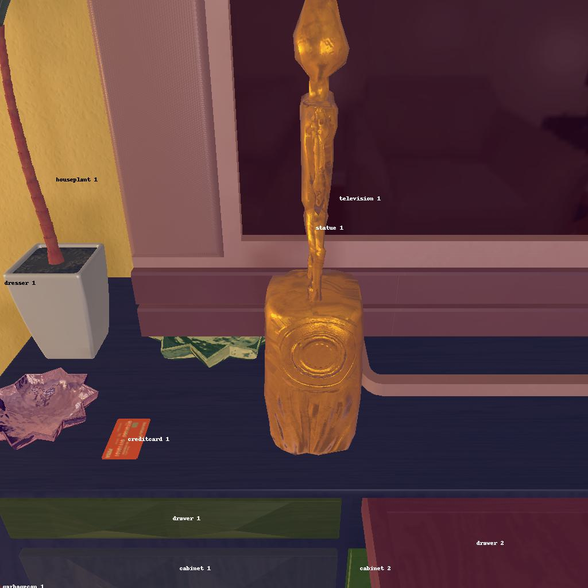

---------------------------------------------------------task: 7---------------------------------------------------------
--------------------------------------------------------------------------------------------------------------------------------------------------------------------
--------------------------------------------------------------------------------------------------------------------------------------------------------------------
Step:--------------------------------------------------------------------------6-------------------------------------------------------------------------------
----------------------------------------
VLM Prompt:
Image1:
**Instruction**
1. Analyze the provided image to identify all visible household objects, focusing on those relevant to the task description "put a creditcard in coffeetable."
2. Use the analysis of the image and the task hint "The agent must find an object of the desired type, pick it up, find the correct location to place it, and put it down there." to answer the question: what is the most reasonable action in the choices for the task description "put a creditcard in coffeetable"?
4. Decide and write the answer using the template: The answer is: (i): , where i is the real number. If there is no desired object in the image, search every place based on **Initial Observation** to find the object. And if no one is exactly correct, choose a similar answer.
**Initial Observation**
You are in the middle of a room. Looking quickly around you, you can see armchair (1-2), dresser (1), garbagecan (1), cabinet (1-4), drawer (1-4), coffeetable (1), sidetable (1), sofa (1)
**Answer Choices**
(1): go to armchair 1
(2): go to armchair 2
(3): go to garbagecan 1
(4): go to cabinet 1
(5): go to drawer 2
(6): go to cabinet 2
(7): go to drawer 3
(8): go to cabinet 3
(9): go to drawer 4
(10): go to cabinet 4
(11): go to coffeetable 1
(12): go to sidetable 1
(13): go to sofa 1
(14): open drawer 1
(15): close drawer 1
(16): examine drawer 1
**Answer**
Let's think step by step by following the instructions.
----------------------------------------
----------------------------------------
Original Response:
First, we analyze the image to find any visible household objects relevant to the task. We can see a "creditcard 1" on the floor near the "dresser 1" and "statue 1." Based on the task description "put a creditcard in coffeetable," the credit card is the object we need to interact with.
Next, we follow the task hint that guides the agent to find the object, pick it up, find the correct location to place it, and put it down there. Since we can already see the credit card, our next step would be to pick it up.
Now, using the initial observation, we know that there is a "coffeetable 1" in the room. The most reasonable action would be to go to the coffeetable to place the credit card there.
Therefore, the answer is: (11): go to coffeetable 1.
----------------------------------------
----------------------------------------
>>> Refine Original VLM Response and Get Pure Action: No action
----------------------------------------
-----------------------------------------------------------------
Running time: 9.25095820426941 seconds
Total Money: 2.1072800000000003
-----------------------------------------------------------------
-----------------------------------------------------------------
Text Observation:Nothing happens.
-----------------------------------------------------------------
UNSUCCEED